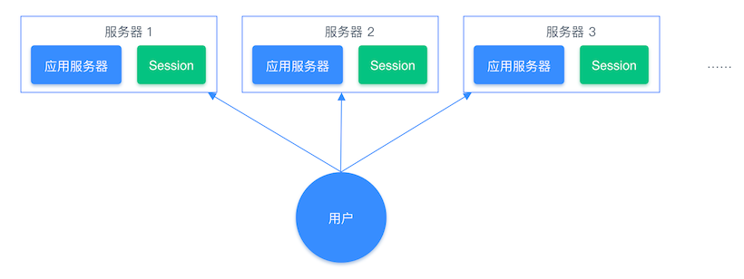
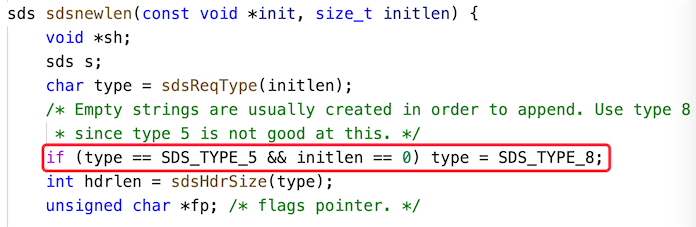

06 字符串使用与内部实现原理¶
Redis 发展到现在已经有 9 种数据类型了，其中最基础、最常用的数据类型有 5 种，它们分别是：字符串类型、列表类型、哈希表类型、集合类型、有序集合类型，而在这 5 种数据类型中最常用的是字符串类型，所以本文我们先从字符串的使用开始说起。
字符串类型的全称是 Simple Dynamic Strings 简称 SDS，中文意思是：简单动态字符串。它是以键值对 key-value 的形式进行存储的，根据 key 来存储和获取 value 值，它的使用相对来说比较简单，但在实际项目中应用非常广泛。
1 字符串类型能做什么？¶
字符串类型的使用场景有很多，但从功能的角度来区分，大致可分为以下两种：
- 字符串存储和操作；
- 整数类型和浮点类型的存储和计算。
字符串最常用的业务场景有以下几个。
1）页面数据缓存¶
我们知道，一个系统最宝贵的资源就是数据库资源，随着公司业务的发展壮大，数据库的存储量也会越来越大，并且要处理的请求也越来越多，当数据量和并发量到达一定级别之后，数据库就变成了拖慢系统运行的“罪魁祸首”，为了避免这种情况的发生，我们可以把查询结果放入缓存(Redis)中，让下次同样的查询直接去缓存系统取结果，而非查询数据库，这样既减少了数据库的压力，同时也提高了程序的运行速度。
介于以上这个思路，我们可以把文章详情页的数据放入缓存系统。具体的做法是先将文章详情页序列化为字符串存入缓存，再从缓存中读取到字符串，反序列化成对象，然后再赋值到页面进行显示 (当然也可以用哈希类型进行存储，这会在下一篇文章中讲到)，这样我们就实现了文章详情页的缓存功能，架构流程对比图如下所示。
原始系统运行流程图： 
引入缓存系统后的流程图： 
2）数字计算与统计¶
Redis 可以用来存储整数和浮点类型的数据，并且可以通过命令直接累加并存储整数信息，这样就省去了每次先要取数据、转换数据、拼加数据、再存入数据的麻烦，只需要使用一个命令就可以完成此流程，具体实现过程本文下半部分会讲。这样我们就可以使用此功能来实现访问量的统计，当有人访问时访问量 +1 就可以了。
3）共享 Session 信息¶
通常我们在开发后台管理系统时，会使用 Session 来保存用户的会话(登录)状态，这些 Session 信息会被保存在服务器端，但这只适用于单系统应用，如果是分布式系统此模式将不再适用。
例如用户一的 Session 信息被存储在服务器一，但第二次访问时用户一被分配到服务器二，这个时候服务器并没有用户一的 Session 信息，就会出现需要重复登录的问题。分布式系统每次会把请求随机分配到不同的服务器，因此我们需要借助缓存系统对这些 Session 信息进行统一的存储和管理，这样无论请求发送到那台服务器，服务器都会去统一的缓存系统获取相关的 Session 信息，这样就解决了分布式系统下 Session 存储的问题。
分布式系统单独存储 Session 流程图： 
{kind=link}
分布式系统使用同一的缓存系统存储 Session 流程图： 
2 字符串如何使用？¶
通常我们会使用两种方式来操作 Redis：第一种是使用命令行来操作，例如 redis-cli；另一种是使用代码的方式来操作，下面我们分别来看。
1）命令行操作方式¶
字符串的操作命令有很多，但大体可分为以下几类：
- 单个键值对操作
- 多个键值对操作
- 数字统计
我们本文使用 redis-cli 来实现对 Redis 的操作，在使用命令之前，先输入 redis-cli 来链接到 Redis 服务器。
① 单个键值对操作¶
a.添加键值对¶
语法：set key value [expiration EX seconds|PX milliseconds] [NX|XX] 示例：
b.获取键值对¶
语法：get key 示例：
c.给元素追加值¶
语法：append key value 示例：
127.0.0.1:6379> get k1
"v1"
127.0.0.1:6379> append k1 append
(integer) 5
127.0.0.1:6379> get k1
"v1append"
d.查询字符串的长度¶
语法：strlen key 示例：
② 多个键值对操作¶
a.创建一个或多个键值对¶
语法：mset key value [key value …] 示例：
小贴士：mset 是一个原子性(atomic)操作，所有给定 key 都会在同一时间内被设置，不会出现某些 key 被更新，而另一些 key 没被更新的情况。
b.查询一个或多个元素¶
语法：mget key [key …] 示例：
③ 数字统计¶
在 Redis 中可以直接操作整型和浮点型，例如可以直接使用命令来加、减值。
a.给整数类型的值加 1¶
语法：incr key 示例：
b.给整数类型的值减 1¶
语法：decr key 示例：
c.根据 key 减去指定的值¶
语法：decrby key decrement 示例：
如果 key 不存在，则会先初始化此 key 为 0 ，然后再执行减法操作：
d.根据 key 加指定的整数值¶
语法：incrby key increment 示例：
如果 key 不存在，则会先初始化此 key 为 0 ，然后再执行加整数值的操作：
e.根据 key 加上指定的浮点数¶
语法：incrbyfloat key increment 示例：
如果 key 不存在，则会先初始化此 key 为 0 ，然后再执行加浮点数的操作：
更多使用命令，详见附录部分。
2）代码操作方式¶
本文我们使用 Java 语言来实现对 Redis 的操作，首先我们在项目中添加对 Jedis 框架的引用，如果是 Maven 项目，我们会在 pom.xml 文件中添加如下信息：
<dependency>
<groupId>redis.clients</groupId>
<artifactId>jedis</artifactId>
<version>${version}</version>
</dependency>
Jedis 是 Redis 官方推荐的 Java 客户端开发包，用于实现快速简单的操作 Redis。添加完 Jedis 之后，我们来写具体的操作代码，操作函数与命令方式的调用比较相似，如下代码所示：
import redis.clients.jedis.Jedis;
import java.util.List;
public class StringExample {
public static void main(String[] args) {
Jedis jedis = new Jedis("127.0.0.1", 6379);
// jedis.auth("xxx"); // 输入密码，没有密码，可以不设置
// 添加一个元素
jedis.set("mystr", "redis");
// 获取元素
String myStr = jedis.get("mystr");
System.out.println(myStr); // 输出：redis
// 添加多个元素(key,value,key2,value2)
jedis.mset("db", "redis", "lang", "java");
// 获取多个元素
List<String> mlist = jedis.mget("db", "lang");
System.out.println(mlist); // 输出：[redis, java]
// 给元素追加字符串
jedis.append("db", ",mysql");
// 打印追加的字符串
System.out.println(jedis.get("db")); // 输出：redis,mysql
// 当 key 不存在时，赋值键值
Long setnx = jedis.setnx("db", "db2");
// 因为 db 元素已经存在，所以会返回 0 条修改
System.out.println(setnx); // 输出：0
// 字符串截取
String range = jedis.getrange("db", 0, 2);
System.out.println(range); // 输出：red
// 添加键值并设置过期时间(单位：毫秒)
String setex = jedis.setex("db", 1000, "redis");
System.out.println(setex); // 输出：ok
// 查询键值的过期时间
Long ttl = jedis.ttl("db");
System.out.println(ttl); // 输出：1000
}
}
3 代码实战¶
本文的上半部分我们讲到了字符串的很多种使用场景，本小节就以字符串存储用户对象信息为例，我们先将用户对象信息序列化为字符串存储在 Redis，再从 Redis 中取出字符串并反序列化为对象信息为例，使用 Java 语言来实现。
首先添加 JSON 转换类，用于对象和字符串之间的序列化和反序列化，我们这里采用 Google 的 Gson 来实现，首先在 pom.xml 文件中添加如下引用：
<!-- https://mvnrepository.com/artifact/com.google.code.gson/gson -->
<dependency>
<groupId>com.google.code.gson</groupId>
<artifactId>gson</artifactId>
<version>2.8.6</version>
</dependency>
添加完 Gson 引用之后，我们来写具体的业务代码，先见用户信息序列化之后存储在 Redis 中：
Jedis jedis = new Jedis("xxx.xxx.xxx.xxx", 6379);
jedis.auth("xxx");
Gson gson = new Gson();
// 构建用户数据
User user = new User();
user.setId(1);
user.setName("Redis");
user.setAge(10);
String jsonUser = gson.toJson(user);
// 打印用户信息(json)
System.out.println(jsonUser); // 输出：{"id":1,"name":"Redis","age":10}
// 把字符串存入 Redis
jedis.set("user", jsonUser);
当使用用户信息时，我们从 Redis 反序列化出来，代码如下：
String getUserData = jedis.get("user");
User userData = gson.fromJson(getUserData, User.class);
// 打印对象属性信息
System.out.println(userData.getId() + ":" + userData.getName()); // 输出结果：1:Redis
以上两个步骤就完成了用户信息存放至 Redis 中的过程，也是常用的经典使用场景之一。
4 字符串的内部实现¶
1）源码分析¶
Redis 3.2 之前 SDS 源码如下：
可以看出 Redis 3.2 之前 SDS 内部是一个带有长度信息的字节数组，存储结构如下图所示：

为了更加有效的利用内存，Redis 3.2 优化了 SDS 的存储结构，源码如下：
typedef char *sds;
struct __attribute__ ((__packed__)) sdshdr5 { // 对应的字符串长度小于 1<<5
unsigned char flags;
char buf[];
};
struct __attribute__ ((__packed__)) sdshdr8 { // 对应的字符串长度小于 1<<8
uint8_t len; /* 已使用长度，1 字节存储 */
uint8_t alloc; /* 总长度 */
unsigned char flags;
char buf[]; // 真正存储字符串的数据空间
};
struct __attribute__ ((__packed__)) sdshdr16 { // 对应的字符串长度小于 1<<16
uint16_t len; /* 已使用长度，2 字节存储 */
uint16_t alloc;
unsigned char flags;
char buf[];
};
struct __attribute__ ((__packed__)) sdshdr32 { // 对应的字符串长度小于 1<<32
uint32_t len; /* 已使用长度，4 字节存储 */
uint32_t alloc;
unsigned char flags;
char buf[];
};
struct __attribute__ ((__packed__)) sdshdr64 { // 对应的字符串长度小于 1<<64
uint64_t len; /* 已使用长度，8 字节存储 */
uint64_t alloc;
unsigned char flags;
char buf[];
};
这样就可以针对不同长度的字符串申请相应的存储类型，从而有效的节约了内存使用。
2）数据类型¶
我们可以使用 object encoding key 命令来查看对象(键值对)存储的数据类型，当我们使用此命令来查询 SDS 对象时，发现 SDS 对象竟然包含了三种不同的数据类型：int、embstr 和 raw。
① int 类型¶
② embstr 类型¶
③ raw 类型¶
127.0.0.1:6379> set key abcdefghigklmnopqrstyvwxyzabcdefghigklmnopqrs
OK
127.0.0.1:6379> object encoding key
"raw"
int 类型很好理解，整数类型对应的就是 int 类型，而字符串则对应是 embstr 类型，当字符串长度大于 44 字节时，会变为 raw 类型存储。
3）为什么是 44 字节？¶
在 Redis 中，如果 SDS 的存储值大于 64 字节时，Redis 的内存分配器会认为此对象为大字符串，并使用 raw 类型来存储，当数据小于 64 字节时(字符串类型)，会使用 embstr 类型存储。既然内存分配器的判断标准是 64 字节，那为什么 embstr 类型和 raw 类型的存储判断值是 44 字节？
这是因为 Redis 在存储对象时，会创建此对象的关联信息，redisObject 对象头和 SDS 自身属性信息，这些信息都会占用一定的存储空间，因此长度判断标准就从 64 字节变成了 44 字节。
在 Redis 中，所有的对象都会包含 redisObject 对象头。我们先来看 redisObject 对象的源码：
typedef struct redisObject {
unsigned type:4; // 4 bit
unsigned encoding:4; // 4 bit
unsigned lru:LRU_BITS; // 3 个字节
int refcount; // 4 个字节
void *ptr; // 8 个字节
} robj;
它的参数说明如下：
- type：对象的数据类型，例如：string、list、hash 等，占用 4 bits 也就是半个字符的大小；
- encoding：对象数据编码，占用 4 bits；
- lru：记录对象的 LRU(Least Recently Used 的缩写，即最近最少使用)信息，内存回收时会用到此属性，占用 24 bits(3 字节)；
- refcount：引用计数器，占用 32 bits(4 字节)；
- *ptr：对象指针用于指向具体的内容，占用 64 bits(8 字节)。
redisObject 总共占用 0.5 bytes + 0.5 bytes + 3 bytes + 4 bytes + 8 bytes = 16 bytes(字节)。
了解了 redisObject 之后，我们再来看 SDS 自身的数据结构，从 SDS 的源码可以看出，SDS 的存储类型一共有 5 种：SDS_TYPE_5、SDS_TYPE_8、SDS_TYPE_16、SDS_TYPE_32、SDS_TYPE_64，在这些类型中最小的存储类型为 SDS_TYPE_５，但 SDS_TYPE_５ 类型会默认转成 SDS_TYPE_8，以下源码可以证明，如下图所示： 
{kind=link}
那我们直接来看 SDS_TYPE_8 的源码：
struct __attribute__ ((__packed__)) sdshdr8 {
uint8_t len; // 1 byte
uint8_t alloc; // 1 byte
unsigned char flags; // 1 byte
char buf[];
};
可以看出除了内容数组(buf)之外，其他三个属性分别占用了 1 个字节，最终分隔字符等于 64 字节，减去 redisObject 的 16 个字节，再减去 SDS 自身的 3 个字节，再减去结束符 \0 结束符占用 1 个字节，最终的结果是 44 字节(64-16-3-1=44)，内存占用如下图所示：
{kind=link}
5 小结¶
本文介绍了字符串的定义及其使用，它的使用主要分为：单键值对操作、多键值对操作、数字统计、键值对过期操作、字符串操作进阶等。同时也介绍了字符串使用的三个场景，字符串类型可用作为：页面数据缓存，可以缓存一些文章详情信息等；数字计算与统计，例如计算页面的访问次数；也可以用作 Session 共享，用来记录管理员的登录信息等。同时我们深入的介绍了字符串的五种数据存储结构，以及字符串的三种内部数据类型，如下图所示：
{kind=link}
同时我们也知道了 embstr 类型向 raw 类型转化，是因为每个 Redis 对象都包含了一个 redisObject 对象头和 SDS 自身属性占用了一定的空间，最终导致数据类型的判断长度是 44 字节。